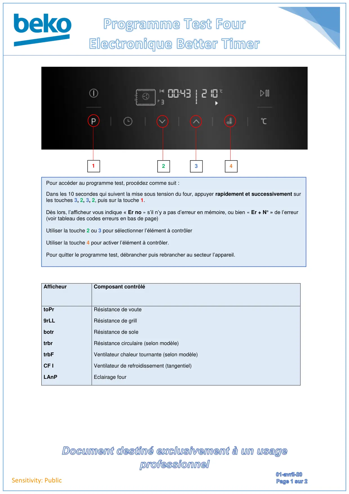
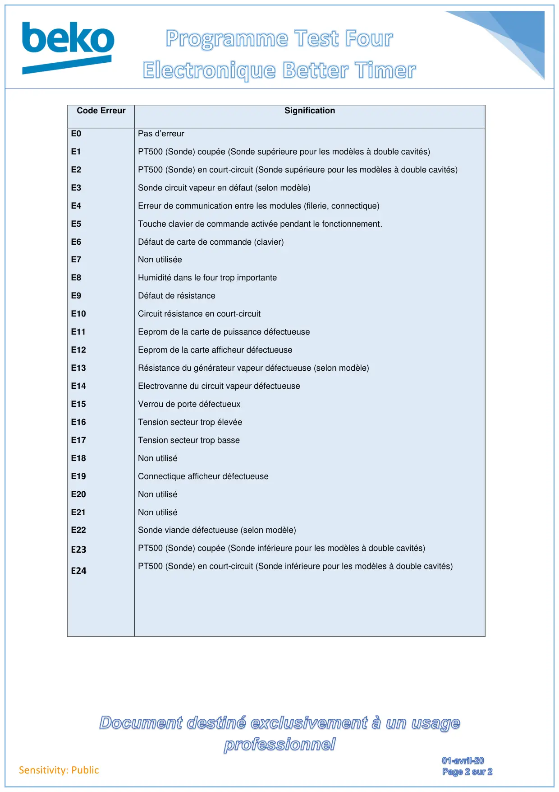

Prog Test Four Better Timer

Sensitivity: PublicAfficheurComposant contrôlétoPr9rLLbotrtrbrtrbFCF ILAnPRésistance de vouteRésistance de grillRésistance de soleRésistance circulaire (selon modèle)Ventilateur chaleur tournante (selon modèle)Ventilateur de refroidissement (tangentiel)Eclairage four1234Pour accéder au programme test, procédez comme suit :Dans les 10 secondes qui suivent la mise sous tension du four, appuyer rapidement et successivement surles touches 3, 2, 3, 2, puis sur la touche 1.Dès lors, l’afficheur vous indique « Er no » s’il n’y a pas d’erreur en mémoire, ou bien « Er + N° » de l’erreur(voir tableau des codes erreurs en bas de page)Utiliser la touche 2 ou 3 pour sélectionner l’élément à contrôlerUtiliser la touche 4 pour activer l’élément à contrôler.Pour quitter le programme test, débrancher puis rebrancher au secteur l’appareil.
1 / 2
Sensitivity: PublicCode ErreurSignificationE0E1E2E3E4E5E6E7E8E9E10E11E12E13E14E15E16E17E18E19E20E21E22E23E24Pas d’erreurPT500 (Sonde) coupée (Sonde supérieure pour les modèles à double cavités)PT500 (Sonde) en court-circuit (Sonde supérieure pour les modèles à double cavités)Sonde circuit vapeur en défaut (selon modèle)Erreur de communication entre les modules (filerie, connectique)Touche clavier de commande activée pendant le fonctionnement.Défaut de carte de commande (clavier)Non utiliséeHumidité dans le four trop importanteDéfaut de résistanceCircuit résistance en court-circuitEeprom de la carte de puissance défectueuseEeprom de la carte afficheur défectueuseRésistance du générateur vapeur défectueuse (selon modèle)Electrovanne du circuit vapeur défectueuseVerrou de porte défectueuxTension secteur trop élevéeTension secteur trop basseNon utiliséConnectique afficheur défectueuseNon utiliséNon utiliséSonde viande défectueuse (selon modèle)PT500 (Sonde) coupée (Sonde inférieure pour les modèles à double cavités)PT500 (Sonde) en court-circuit (Sonde inférieure pour les modèles à double cavités)
2 / 2